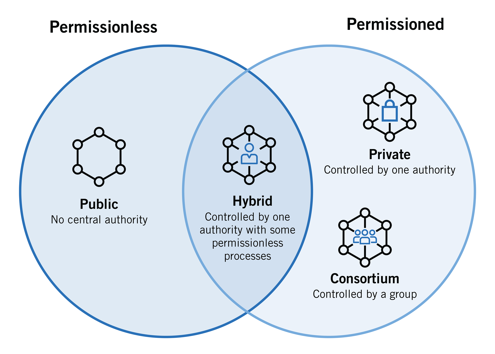

Block-Chain
A blockchain is a distributed database or ledger that is shared among the nodes of a computer network. As a database, a blockchain stores information electronically in digital format.
How Block-Chain work's ??
The goal of blockchain is to store information digitally. In this way,
a blockchain is the foundation for immutable ledgers, or records of
transactions that cannot be altered, deleted, or destroyed. It totally
open and Transparent data storage technology without showing the real
identy of the owner or creator. It cannot be altered, edited or cannot
be change if it has published on Block-Chain, So it is Resistant
against malicious activity.
In the recent years, the use of blockchains has exploded via the
creation of various cryptocurrencies, decentralized finance (DeFi)
applications, non-fungible tokens (NFTs), and smart contracts.
Diffrent types of Block-Chain
There are 3 diffrent types Block-chain.
Public blockchains are permissionless in nature, allow anyone to join, and are completely decentralized. Public blockchains allow all nodes of the blockchain to have equal rights to access the blockchain, create new blocks of data, and validate blocks of data. To date, public blockchains are primarily used for exchanging and mining cryptocurrency. You may have heard of popular public blockchains such as Bitcoin, Ethereum, and Litecoin. On these public blockchains, the nodes “mine” for cryptocurrency by creating blocks for the transactions requested on the network by solving cryptographic equations. In return for this hard work, the miner nodes earn a small amount of cryptocurrency. The miners essentially act as new era bank tellers that formulate a transaction and receive (or “mine”) a fee for their efforts.
Hybrid Blockchains lie somewhere between private and public blockchains, depending on their architecture. Therefore, to get a good understanding of hybrid blockchains, one must first understand the differences between private and public blockchains. As the name suggests, public blockchains are accessible to and managed by the public. By comparison, a private blockchain allows limited access to entities outside a trusted few who were involved in the creation of the private blockchain. Typically, private blockchains have administrators who can control permissions of adding or modifying data on a private blockchain. The most popular private blockchains include the hyperledger fabric which is being developed as a competitor to Ethereum by IBM and quorum.
Private blockchain platforms focus mainly on privacy instead of full disclosures. So, if you are interested in a technology where privacy is the greatest concern, then private blockchains are surely for you. On the other hand, an enterprise needs security and privacy because they always deal with cyber-attacks. Also, as they are dealing with sensitive information all the time, it makes it difficult to keep everything at bay. Thus, if a company can use a private blockchain to tighten up its security facilities, then it’ll be impossible for any hacker to hack into the system.